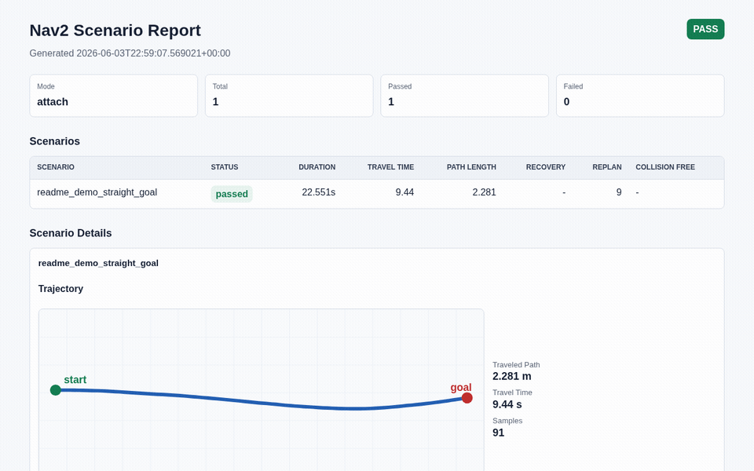
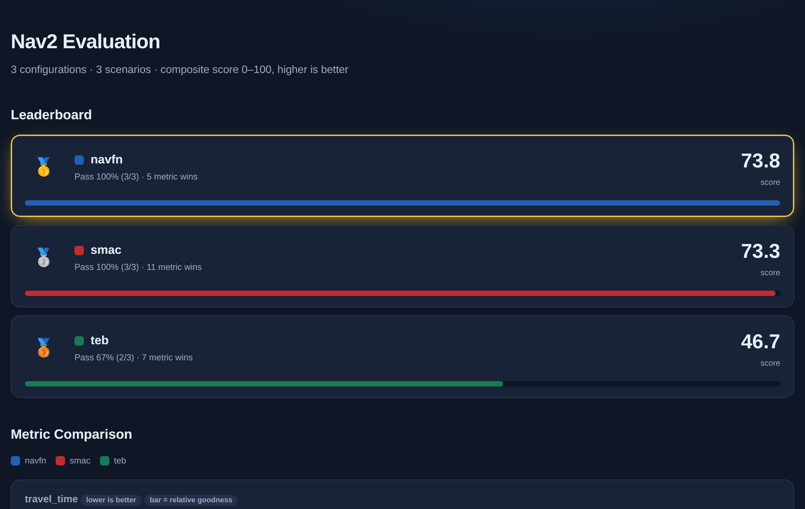
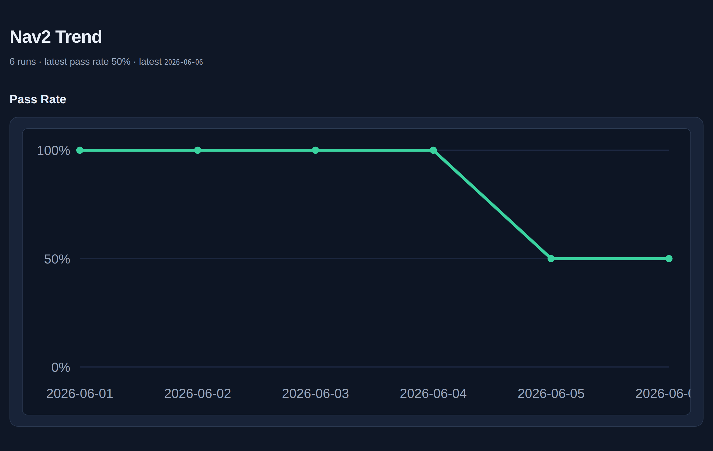
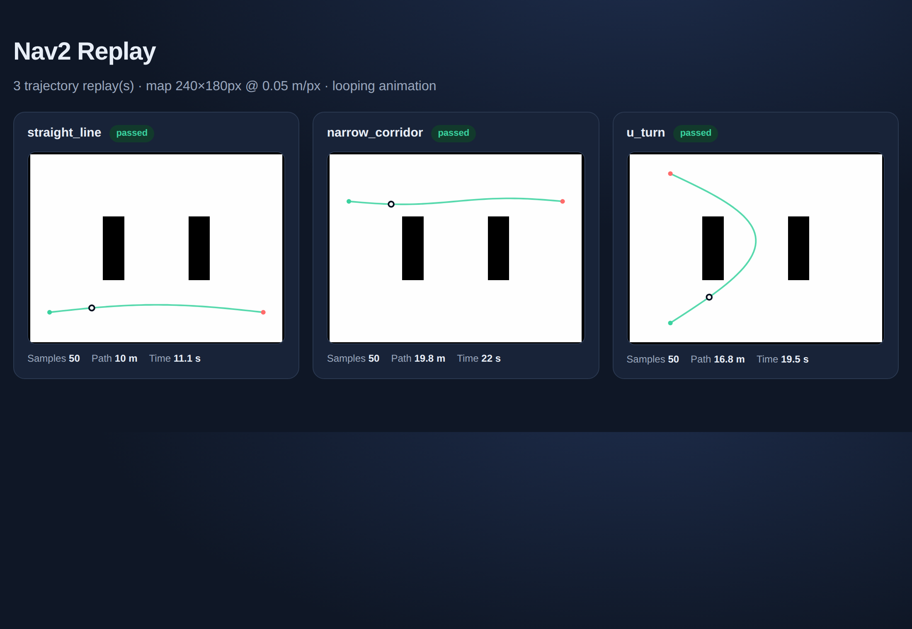

Scenario YAML
Review goals, waits, dynamic obstacles, and assertions as code in pull requests.
Write navigation scenarios in YAML, run them from one CLI, then rank planners on a leaderboard, watch quality trend across commits, and replay trajectories over the map.
python3 -m pip install -e .
nav2_scenario_runner init .
nav2_scenario_runner run scenarios/ \
--report-dir reports/ \
--html-report index.html
Generated by the runner itself from the example benchmark suite on every deploy. Self-contained HTML, no JavaScript.

Rank planners 0–100 across a scenario suite with metric-comparison bars.

Watch pass rate and per-scenario metrics drift across commits to catch regressions.

Animate the robot along its /odom path over the real occupancy grid.
Reproduce locally: bash scripts/build_dashboards.sh
Review goals, waits, dynamic obstacles, and assertions as code in pull requests.
Track goal success, travel time, path length, replans, recoveries, and collision signals.
Emit JSON, JUnit XML, Markdown, HTML reports, GitHub summaries, and trace timelines.
apiVersion: nav2.scenario/v1alpha1
kind: Scenario
metadata:
name: straight_line_goal
tags: [smoke, navigation]
steps:
- wait_for_nav2_active: {timeout: 30}
- set_initial_pose: {x: 0, y: 0, yaw: 0}
- send_goal:
name: main_goal
pose: {x: 10, y: 0, yaw: 0}
- expect_goal_reached:
goal: main_goal
timeout: 60
assertions:
- goal_reached: {}
- path_length: {max: 13.0}
- travel_time: {max: 60.0}| Scenario | Status | Time | Path | Replan |
|---|---|---|---|---|
| straight_line_goal | passed | 9.44s | 2.28m | 9 |
| dynamic_obstacle | warning | 31.8s | 11.4m | 6 |